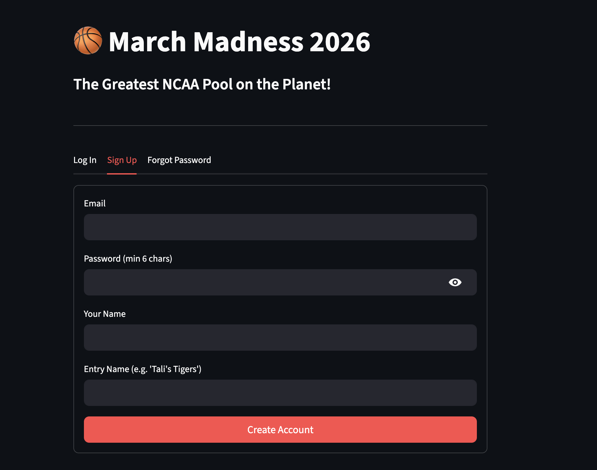
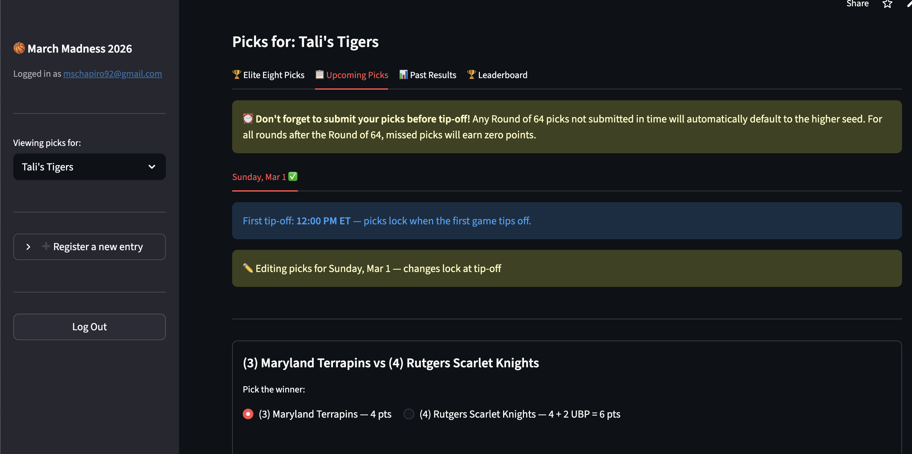
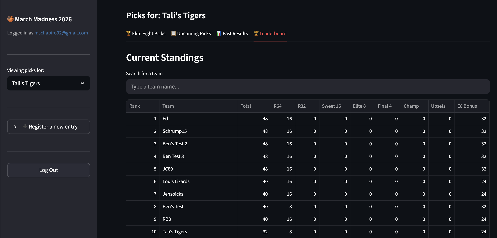

AI adoption, product strategy, and hands-on builds — three case studies in using AI to drive real outcomes
How I used Microsoft Copilot Studio to solve a consistency problem across 20+ contributors and drive real AI adoption
Large cross-functional teams produce high-stakes deliverables collaboratively — often with 20+ authors contributing to a single document. The result is inconsistent tone, conflicting messaging, and a painful review cycle where leadership has to manually realign the output every time.
The team needed a way to maintain one voice and stay aligned to strategic themes — without slowing anyone down or requiring every contributor to sit through a style briefing.
I built a custom agent in Microsoft Copilot Studio that served as the team's always-available writing partner — grounded in domain-specific knowledge and configured with structured instructions that encoded quality standards.
The agent became the team's default tool from start to finish — not a side experiment. It reduced review cycles, eliminated the "herding cats" problem of multi-author documents, and proved out a repeatable pattern for how Copilot Studio can solve real enterprise collaboration challenges.
Enterprise AI adoption isn't about the technology — it's about solving a real workflow problem well enough that people actually change how they work. This agent succeeded because it addressed a pain point the team felt daily, was grounded in their own domain knowledge, and was configured with enough specificity to be genuinely useful. That's the difference between a demo and adoption.
How I built an automated pipeline that pulled from multiple data sources and delivered consistent, AI-enhanced briefing decks before every account meeting
A senior stakeholder needed up-to-date briefing decks before every major account meeting. Each briefing required pulling from multiple disconnected sources — public financial data, recent press coverage, internal relationship history, and pipeline activity.
Preparing these manually meant hours of research, copy-pasting between systems, and inconsistent formatting. The information was always available — it just wasn't assembled. And every briefing had to look and feel the same, regardless of who prepared it or which account it was for.
I designed a human-in-the-loop workflow that paired a manual Copilot research step with a fully automated Power Automate pipeline. Copilot handled the research — the flow handled everything else.
$filter queries (e.g., Account eq 'Contoso' and Date ge '2024-01-01') to pull engagement history and relationship data scoped to the specific account and time range.What used to be a manual, multi-hour research and formatting exercise became a one-click workflow. The stakeholder walked into every meeting with current, comprehensive, and consistently formatted intelligence — and the team that used to prepare these manually was freed up for higher-value work.
Not everything needs to be fully automated to be effective. This workflow succeeds because it puts human judgment where it matters — the research — and automates everything after. Copilot handles the open-ended intelligence gathering that requires a human eye, then a structured Excel handoff makes the rest of the pipeline reliable and repeatable. The best enterprise automations are hybrids: human-in-the-loop where quality matters, lights-out where consistency matters.
A full-stack NCAA tournament pick-em app — designed, built, and shipped using AI as my development partner
I wanted to run a friends-and-family NCAA tournament pool for 100+ participants with custom scoring rules — daily pick-em with upset bonuses, Elite Eight predictions, and a real-time leaderboard. No existing platform supported the format I needed.
Rather than compromise on the rules, I decided to build the platform myself — with no prior Python or web development experience — using AI tools as my development partner.



Ran a live beta with 10 testers over a weekend, caught and fixed scoring bugs in real-time, and deployed for the full tournament with zero manual intervention needed.
This project is a proof point for what I help enterprise customers do every day: use AI to move from idea to working product, fast. The same skills it takes to architect an AI adoption strategy for a Fortune 500 — scoping requirements, designing workflows, iterating through feedback, and shipping under pressure — are the same skills I used to build this from scratch. AI isn't just something I advise on. It's something I use to build.